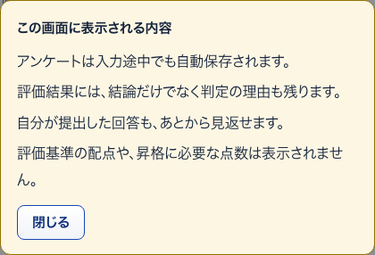
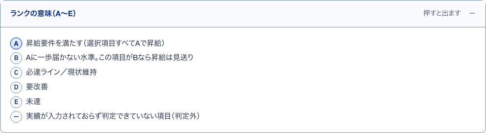
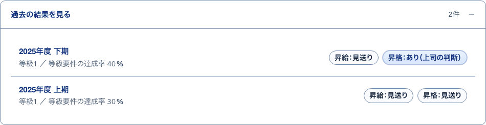

1この画面の見方開いて見る
S31 アンケートの中身（1本） ・ 押すもの: 「この画面の見方」
中に出るもの
- 設問文・補足・答え方は保存のとおりに出す
- 印の無い設問は必須、（任意）は空欄でも提出できる
- 選んでも保存されない
- 開いても回答や下書きは作られない
- 配点などを出さない理由（一般の社員）
- 試しに回答するの案内（管理者）
4この内容で提出します確かめる小窓
S34 アンケートに答える ・ 押すもの: 「内容を確認して提出する」 ・ 閉じる: 入力に戻る
中に出るもの
- 提出すると自分では変更できなくなる
- 修正が必要なときは上長に連絡する
- 未入力の項目の件数と例
中で押せるもの
- 提出する: 提出し、この画面が提出済みの表示に変わる
- 入力に戻る: 確認の欄を閉じて入力を続ける
- 最初の未入力の欄へ移る: 答えていない最初の欄へ移る
7達成率の分母について開いて見る
S44 評価1件（本人） ・ 押すもの: 「達成率の分母について」
中に出るもの
- 分母はこのアンケートで実際に聞いた等級要件の項目数
- 未回答の項目も未達として数える
2この画面に表示される内容小窓
S32 社員のホーム ・ 押すもの: 「この画面に表示される内容」 ・ 閉じる: 閉じる

中に出るもの
- アンケートは入力途中でも自動保存される
- 評価結果には判定の理由も残る
- 提出した回答もあとから見返せる
- 配点や昇格に必要な点数は出ない
中で押せるもの
- 閉じる: 小窓を閉じる。Esc や背景を押しても閉じる
6ランクの意味（A〜E）開いて見る
S44 評価1件（本人） ・ 押すもの: 「ランクの意味（A〜E）」

中に出るもの
- A 昇給要件を満たす
- B Aに一歩届かない
- C 必達ライン・現状維持
- D 要改善
- E 未達
- 判定外 実績が未入力
3過去の結果を見る開いて見る
S32 社員のホーム ・ 押すもの: 「過去の結果を見る」

中に出るもの
- 期名
- 等級
- 等級要件の達成率
- 昇給・昇格の札
中で押せるもの
- 期名: その期の評価1件（本人）へ移る（→ S44）
5この図の見方開いて見る
S44 評価1件（本人） ・ 押すもの: 「この図の見方」
中に出るもの
- 軸の長さはランク（A〜E）をもとにした形
- 配点は上長・管理者だけが見られる
- 点数そのものは反映していない
8仮置き説明
S44 評価1件（本人） ・ 押すもの: 「仮置き」 ・ 閉じる: マウスを離す
中に出るもの
- 制度として未確定のため、叩き台の初期値を入れている